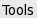
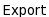
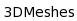
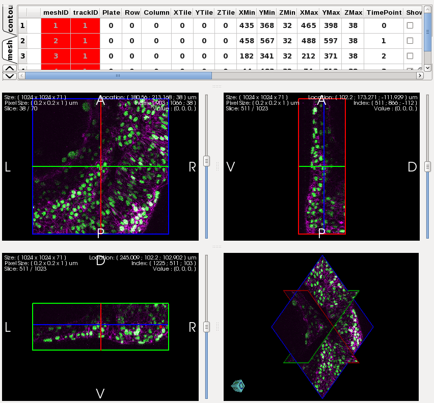

import os
address = os.getcwd()
#address = "/home/es1076/GITROOT/GoFigure2/Testing/Sikuli/gofigure2_images"
#address = address+"/gofigure2_images"
print address
setBundlePath(address)
#2 scripts: one before GF closes and one after creating database.
#will need script to create meshes on 1 track in different time points.
#click("NavigationIcon.png")
#click("TableWidgetIcon.png")
#click("MeshSegmentationIcon.png")
#Need to make 3D meshes
click()
click()
click()
wait(1)
type("3DMeshExportTest.txt"+Key.ENTER)
#BUG: AFTER PRESS ENTER TO SAVE TXT GF CRASHES !!
reg = find(Pattern().similar(0.30))
#this should find a rough 30% image and just get the coordinates and then take real image below
table_quadview = reg.getRect()
quadview_image_BEFORE =capture(table_quadview)
import shutil
shutil.copy2(quadview_image_BEFORE, address+ )
print quadview_image_BEFORE
f = open("quadview_image_BEFORE_address.txt","w")
f.write(quadview_image_BEFORE)
import re
string = "/home/es1076/GITROOT/GoFigure2/BUILD/bin/gofigure"
pattern = "GITROOT"
result = re.search(pattern, string)
len = result.start(0)
user = address[0:len]
closeApp(user+"GITROOT/GoFigure2/BUILD/bin/gofigure")
#Tools
#export 3DMesh
#Take Screeshot of quad view and table widget before to compare with after
#close GF
#drop mysql db
#reopen gofigure
#create database and imaging session using scripts
#import track
#close imaging session
#reopen imaging session
#compare screenshot of before with after.
)
print quadview_image_BEFORE
f = open("quadview_image_BEFORE_address.txt","w")
f.write(quadview_image_BEFORE)
import re
string = "/home/es1076/GITROOT/GoFigure2/BUILD/bin/gofigure"
pattern = "GITROOT"
result = re.search(pattern, string)
len = result.start(0)
user = address[0:len]
closeApp(user+"GITROOT/GoFigure2/BUILD/bin/gofigure")
#Tools
#export 3DMesh
#Take Screeshot of quad view and table widget before to compare with after
#close GF
#drop mysql db
#reopen gofigure
#create database and imaging session using scripts
#import track
#close imaging session
#reopen imaging session
#compare screenshot of before with after.